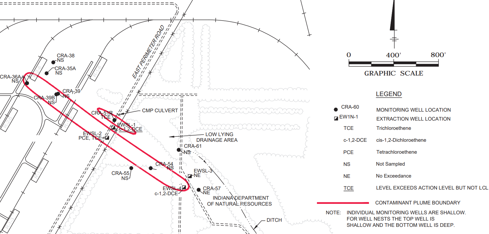
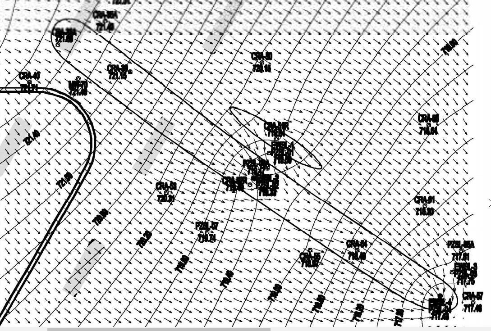

13.1. Setting the Scene#
The Fisher-Calo Superfund Site is located in the multiple square-mile Kingsbury Industrial Development Park (KIDP) in La Porte County, Indiana. Two communities, Kingsbury and Kingsford Heights are located within 2 miles of KIDP. An industrial chemical processing and distribution facility operated on that site. Fisher-Calo Chemicals and Solvent Company and various subsidiaries began operations at KIDP in the early 1970s, with wastes buried on-site in thousands of drums. Spills, leakage, and a large fire in March 1978 resulted in the contamination of soil and groundwater with polychlorinated biphenyls (PCBs) and volatile organic compounds (VOCs). The contamination has spread from the source due to groundwater flow, and thus the contaminant source is not a mathematical source per se. The site’s long-term remedies include:
excavation, consolidation, and offsite disposal of 3,600 drums (1994-1996);
soil source area remediation via excavation and off site disposal of PCB impacted soils, soil vapor extraction (SVE), and bio-venting of semi-volatile organic compound (SVOC) impacted soils, and SVE of volatile organic compound (VOC) impacted soils (1996-2001); and
groundwater extraction and treatment (1998-present) with partial Pilot Study evaluation of enhanced monitored natural attenuation (2020-present).
The EPA conducts 5 year reviews to monitor and evaluate adherence to planned operations.
Math modeling was used to support the goal to design an effective contaminant extraction well remediation system. Such a system includes both pollutant extracting wells (EW) and plume monitoring wells (MW), and is the traditional remediation approach. The Fischer-Calo Groundwater Extraction and Treatment System consisting of 16 extraction wells (EWs) began operating in Feb 1998. More than four different contaminated groundwater plumes were identified. We focus on one of these plumes, called the Space Leasing plume. In the figures below, a rough approximation of the main Fisher-Calo Space Leasing plume boundary is shown encircled in the long bold oval. For this plume, one extraction well (EWSL-2) is located mid-plume, and a second extraction well (EWSL-4) downstream at the plume’s bottom right. (lower) Groundwater direction arrows are orthogonal to the lines of equipotential. Figure Credit: [U.S. Environmental Protection Agency 2020]
 {kind=link}
{kind=link}
Groundwater at Space Leasing is present in the shallow, unconfined sand aquifer with a saturated thickness of approximately 48 to 58 feet. The direction of groundwater flow is to the southeast at an approximate horizontal hydraulic gradient of 0.002 ft/ft under 2019 pumping conditions. Groundwater in the Space-Leasing plume is impacted with chlorinated volatile organic compounds (CVOC), including trichloroethene (TCE), tetrachloroethene (PCE), and cis-1,2-Dichloroethene (cis-1,2-DCE) at concentrations greater than action levels in the upper half of the unconfined aquifer. The extent of the CVOC plume at Space-Leasing is approximately 150 feet wide by approximately 1,750 feet long and is oriented in the northwest to southeast direction.
Our model is based on 2019 data for the Space Leasing Plume remediation [U.S. Environmental Protection Agency 2020] which involved a pump and treat system with two extraction wells, one mid-plume (EWSL-2), and the other at the down-stream end (EWSL-4). We considered the following modeling problem:
Assess the containment of above action level contaminant at monitoring wells by the two extraction wells (EWSL-2, EWSL-4).
Our model utilizes the beauty and ingenuity of complex variables to analyze 2-dimensional groundwater flow. In an effort to make this Module self-contained, we begin with a brief background of complex analysis (Section 2) and its idealized application to 2-dimensional groundwater flow (Section 3). Sato’s wonderful book Complex Analysis for Practical Engineering [Sato 2015] provides complete background for our approach. Section 4 presents our model of the Space Leasing Plume. The Supplemental Python Jupyter Notebooks (JNBs) can be used to visualize streamlines in a variety of settings, such as flow to a system of extraction wells from locations where contaminant is above action level.